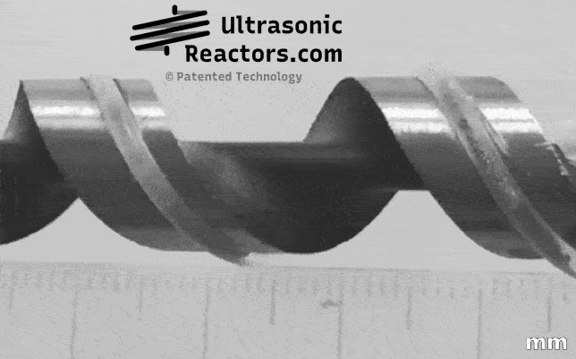
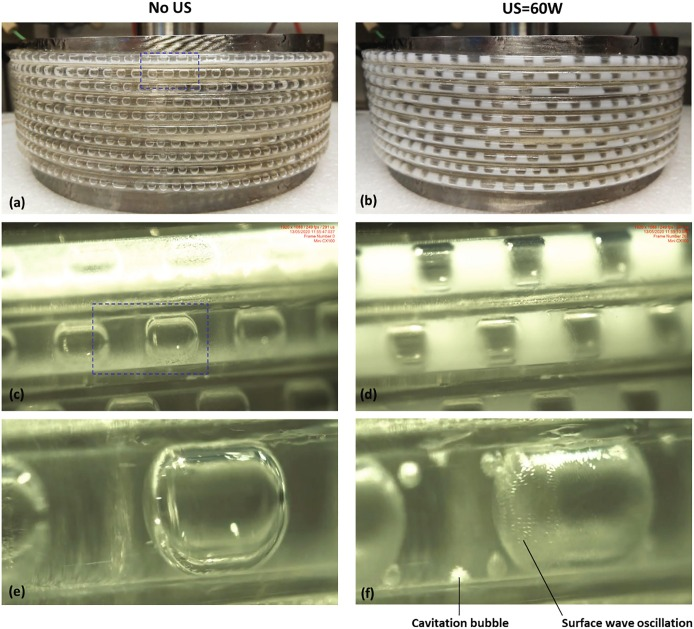
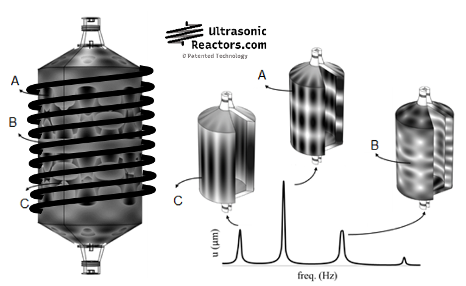

Ultrasound enables new flow chemistry
With several applications in the pharmaceutical industry, fine chemistry, and in sonochemistry. Ultrasonic reactors, or sonoreactors, enable continuous manufacturing in chemical or physical processes, allowing the handling of solids and the improvement of heterogeneous mixtures (gas–liquid–solid, crystallization) in tubes of variable diameter and length with optimal temperature control — from micro-, to capillary and tubular reactors.
Contact us to learn moreScientifically proven technology
2× patented technology
A unique competitive advantage: two patents protecting our sonoreactor designs.
Watch the video →Tested at MIT (USA)
Our technology was validated at the Massachusetts Institute of Technology.
See the paper →Scaled-up designs
Reactor length and diameter can be scaled to your process requirements.
Read more →Sonoreactors in action



Optimized sonoreactor designs
Intensified flow chemistry brings the benefits of process intensification, continuous manufacturing, and greener chemistry to the fine chemical industry. However, miniaturized catalytic processes where gas, liquid, and solids are involved had always been impeded by two main drawbacks: multiphase-flow maldistribution (i.e. gas channeling) and clogging of capillary reactors.
Our computer-based prototyping methodology provides the optimum acoustic design to scale up sonoreactors. We are pioneering a new range of chemistry able to:

Contact us
Research Results Transfer Office (OTRI) · University of Alicante
+34 96 590 99 59 · areaempresas@ua.es